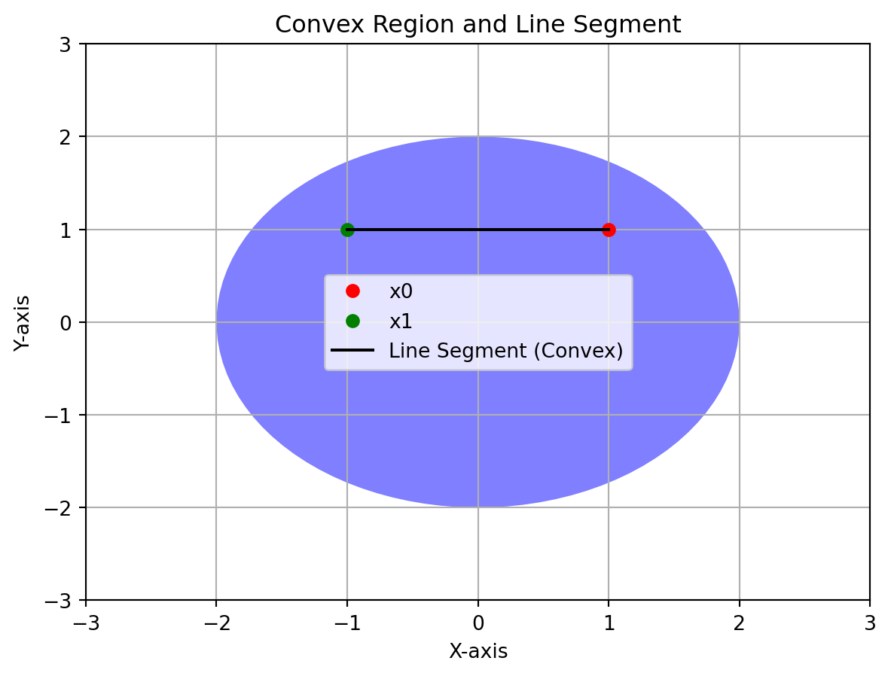

For instance when \(D=2\) we can think of \(x_1\) as the amount of black pixels in the image, and \(x_2\) as the white pixels. Then I can clasify one image into this 2-D dimensional space. So in the xy-plane one image has \((x1,x2)\) coordinates
We dive \(\underline{x}\) into \(K\) Decision Regions \(R_k\).
For each Decision Region \(R_k\) we assign it to a class \(C_k\).
The target \(\underline{t} \in \{C_1,...,C_k\}\) meaning the target can be classified either \(C_1\) or the target can be classified as \(C_2\)
2 Linear Classification
Note: do not confuse \(D\) the amount of data points with this new \(D\) where we talk about the dimensionality of how each data point is represented (the coordinates)
The classification is done by only linear decision boundaries
For \(D\)-dimensional input space: \(\underline{x}\in\mathbb{R}^{D}\). The decision surface is a \(D-1\) dimensional hyperplane. For instance:
The decision boundaries can take a form of a line, i.e when \(\underline{x}\in\mathbb{R}^{D=2x1}\) meaning the dots are drawn in the \(x,y\) coordinates
The decision boundaries can take a form of a plane, i.e when \(\underline{x}\in\mathbb{R}^{D=3x1}\) meaning the dots are drawn in the \(x,y,z\) coordinates
Linear Classifiers have however some constraints: one-versus-one, or one-vs-rest cannot classified in one specific region when majority vote its applied. There is class of decisions
3 Decision Theory
Here we talked about when we consider a classifier (a model) a good classifier.
Here we do not impose \(diag\{\Sigma_k\}\), we can have Naive Bayes approach here. The latter meaning we can indeeed if we want have the covariance matrices to be \(diag\{\Sigma_k\}\). In this called we called. Naive Bayes applied to LDA.
Naive Bayes applied to LDA: same/shared parameters for \(\Sigma_k\) and \(diag\{\Sigma_k\}\)
Understanding Covariance and Variance
Code
import numpy as npimport matplotlib.pyplot as pltfrom scipy.stats import multivariate_normalimport matplotlib.colorbar as cbar# Define the mean and covariance matrix for the original casemean = [0, 0]covariance_matrix = [[2, 1], [1, 2]] # Example covariance matrix# Create a grid of pointsx, y = np.meshgrid(np.linspace(-5, 5, 100), np.linspace(-5, 5, 100))pos = np.dstack((x, y))# Create a multivariate Gaussian distribution for the original caserv = multivariate_normal(mean, covariance_matrix)# Calculate the probability density at each point in the grid for the original casepdf = rv.pdf(pos)# Calculate eigenvalues and eigenvectors for the original caseeigenvalues, eigenvectors = np.linalg.eig(covariance_matrix)# Define the scale factor for the arrowsscale_factor =2.0# Create the first subplot for the original caseplt.subplot(1, 2, 1)plt.contourf(x, y, pdf, cmap='viridis')for i inrange(2): plt.arrow( mean[0], mean[1], eigenvectors[i, 0] * np.sqrt(eigenvalues[i]) * scale_factor, eigenvectors[i, 1] * np.sqrt(eigenvalues[i]) * scale_factor, head_width=0.2, head_length=0.2, fc='r', ec='r', )plt.annotate(f'Var(X) = {eigenvalues[0]:.2f}', xy=(-3, 3), color='white')plt.annotate(f'Var(Y) = {eigenvalues[1]:.2f}', xy=(-3, 2), color='white')plt.annotate(f'Cov(X, Y) = {covariance_matrix[0][1]:.2f}', xy=(-3, 1), color='white')plt.title('Original Case (Covariance ≠ 0)')# Define the mean and covariance matrix for the equal variance caseequal_variance_cov_matrix = np.diag([2, 2]) # Equal variance along both dimensions# Create a multivariate Gaussian distribution for the equal variance caserv_equal_variance = multivariate_normal(mean, equal_variance_cov_matrix)# Calculate the probability density at each point in the grid for the equal variance casepdf_equal_variance = rv_equal_variance.pdf(pos)# Create the second subplot for the equal variance caseplt.subplot(1, 2, 2)plt.contourf(x, y, pdf_equal_variance, cmap='viridis')plt.annotate(f'Var(X) = {equal_variance_cov_matrix[0, 0]:.2f}', xy=(-3, 3), color='white')plt.annotate(f'Var(Y) = {equal_variance_cov_matrix[1, 1]:.2f}', xy=(-3, 2), color='white')plt.title('Equal Variance Case (Covariance = 0)')# Set common labelsfor ax in plt.gcf().axes: ax.set_xlabel('X') ax.set_ylabel('Y')# Ensure equal aspect ratio for both subplotsfor ax in plt.gcf().axes: ax.set_aspect('equal', adjustable='box')# Create a new axes for the legend with adjusted widthcax = plt.gcf().add_axes([0.96, 0.3, 0.02, 0.4]) # Adjust the width and position as needed# Plot vertical colorbar for the legendcbar.ColorbarBase(cax, cmap='viridis', orientation='vertical', label='Probability Density')# Adjust the overall layoutplt.subplots_adjust(wspace=0.3)plt.show()
This plot visually illustrates how variance represents the spread along each dimension, and the arrows depict how the covariance matrix encodes the relationships between the dimensions in a Gaussian distribution.
Original Case (Covariance ≠ 0):
In the first plot (Original Case), the color yellow represents regions where the probability density is higher. In a Gaussian distribution, the probability density is highest at the mean (center) of the distribution and decreases as you move away from the mean. The color yellow typically corresponds to higher probability values in this context.
Equal Variance Case (Covariance = 0):
In the second plot (Equal Variance Case), the color yellow also represents regions of higher probability density. Even though the covariance is zero, meaning there is no linear relationship between the X and Y dimensions, the multivariate Gaussian distribution still has a peak at the mean (center) in each dimension. The color yellow again corresponds to higher probability values in this context.
QDA: they have separate Covariances
LDA: they share a non-zero covariance
Here the shared variances mean for example 3 in the y-direction and 1 in the x-direction, they however contain a non-zero covariance
Here the shared variances mean for example 1 in the y-direction and 1 in the x-direction, they however contain a zero covariance.
Where \(a\) is defined was defined as the log odds. So replacing \(p(x|C_k)\) so replacing \(\ref{gaussian_lda}\) (the Gaussians) in the log odds \(\ref{log_odds}\) give us The Generalized Linear Model:
And now recall that the decision boundary happens when \(p(C_1|x) = p(C_2|x)\).
This all means if we want to make decisions based on the posterior distributions, then \(a=0\) meaning the prob/prob is 1 or the \(\sigma(a) = \frac{1}{2}\)
8 LDA: Maximum Likelihood for K=2
Goal: recover the Gaussian distributions (the join distribution = p(X, C_k)) that have generated the data. To accomplished that we need to take the MLE over the the Gaussian conditional densities aka the likelihood and solve for \(u_k\), \(\Sigma\) and priors \(p(C_k)\)
Isometric Covariance definition
It is a special case of a covariance matrix where all off-diagonal elements are zero, and the diagonal elements are equal, representing a constant variance or dispersion in all dimensions.
Mathematically, an isometric covariance matrix Σ can be represented as:
Σ = σ² * I
Where:
Σ is the covariance matrix.
σ² is the common variance or dispersion parameter.
I is the identity matrix, which has ones on the diagonal and zeros elsewhere.
In this form, each element along the diagonal of the covariance matrix Σ is equal to σ², and all off-diagonal elements are zero. This implies that the variables in a multivariate distribution with an isometric covariance matrix have equal variances and are uncorrelated with each other.
\(\mu_{2,Ml}\) is the sample mean of all my observations where \(x_n\) belongs to class \(K=2\)
8.3 Covariance for discrete Random Variables
For class \(i\) the covariance matrix can be calculated as: \[
\begin{align}
\Sigma_i &= \frac{1}{N_i}\sum_{n=1}^{N_i}(x_n-\mu_i)(x_n-\mu_i)^T \\
\end{align}
\]
Where:
\(N_i\) is the number of data points in class \(i\)
\(x_n\) is a data point in class \(i\)
\(\mu_i\) is the mean vector of class \(i\)
How to classify a new data point?
Gaussian Classifier: Once you have the covariance matrices for each class, you can use them to build a Gaussian classifier. The Gaussian classifier estimates the likelihood of a given data point belonging to each class based on the probability density function of a multivariate Gaussian distribution with the class’s mean and covariance matrix.
Classification: When you receive a new data point, you calculate the likelihood of it belonging to each class using the Gaussian distribution parameters (mean and covariance matrix) for each class. You can then assign the data point to the class with the highest likelihood.
Sensitive to outliers. Meaning if I have a point really far from \(\mu_1\) then it induces a large shift to the actual \(\mu_1\)
Relies in handcrafted features, if I go to high dimensional spaces I need to make choices and complicates things
The same as regression, here in clarification with LDA the MLE MAximum Likelihood are prone to overfilling. The latter because any regularization has been applied
So far:
9 Probabilistic Generative Models: Discrete
In this section we parametrize the class-conditional density with other distributions
So far we parametrize the Class conditional distributions with Gaussians. We can use however different ones. This is necessary when ie. the data it is not continuous and for instance its discrete.
In the Continuous space the number of parameters does not scales as much as in the discrete where then we have for i.e a binary classification to \(2^D\) parameters. The reasons is that we cannot fit anymore a Gaussains distribution to the discrete variables
To contrast the huge num. of parameters then we are going to make a model assumption that is:
Naive Bayes assumption: feature value are treated as independent when conditioned on class \(C_k\).
The above means that we are going to model each feature value with its own distribution. This in turn means that to model \(p(x|C_k, \lambda_1,...,\lambda_D)\) we will have \(D\) number of parameters. The following equation accounts for that using the product symbol.
\(x_i\) takes the value \(0\) or \(1\) given my class \(C_k\)
The above equation was modeled using the bernoulli equation
Effect of changing parameters in Bernoulli distribution
The Bernoulli distribution is a discrete probability distribution that models a random experiment with two possible outcomes, often referred to as “success” and “failure.” It is named after Swiss mathematician Jacob Bernoulli. The Bernoulli distribution is used to represent situations where an event can result in one of two possible outcomes, typically denoted as 1 (success) or 0 (failure).
Here are the key characteristics and properties of the Bernoulli distribution:
Parameters: The Bernoulli distribution has a single parameter, denoted as “p,” which represents the probability of success (or the probability of the outcome being 1). The parameter “q” represents the probability of failure (q = 1 - p).
Probability Mass Function (PMF): The probability mass function of the Bernoulli distribution is defined as follows:
P(X = x) = p^x * q^(1-x)
Where:
P(X = x) is the probability of the random variable X taking the value x (either 0 or 1).
p is the probability of success (X = 1).
q is the probability of failure (X = 0).
Mean and Variance:
The mean (expected value) of a Bernoulli random variable is E(X) = p.
The variance of a Bernoulli random variable is Var(X) = p(1-p).
Support: The Bernoulli distribution is defined over the set of values {0, 1}.
Applications of the Bernoulli distribution: - Modeling coin flips (heads or tails). - Modeling success/failure outcomes, such as whether a product is defective (failure) or non-defective (success). - Modeling binary decisions, such as whether a customer makes a purchase (success) or does not make a purchase (failure).
Example Scenario: Suppose you have a coin that is not fair; it is biased. When you flip this biased coin, it does not have an equal chance of landing on heads (H) or tails (T). Instead, it has a higher probability of landing on heads.
Probability of Success (Heads): In this example, we have a probability of success (getting heads) denoted as “p.” Let’s say that “p” is equal to 0.6. This means that when you flip the coin, there is a 60% chance of getting heads (H) and a 40% chance of getting tails (T).
Using the Bernoulli Distribution: To model this coin-flipping scenario, you can use a Bernoulli distribution. In this context:
The outcome “1” can represent success (getting heads).
The outcome “0” can represent failure (getting tails).
The Bernoulli distribution allows you to calculate the probability of success (1) or failure (0) for each coin flip.
Bernoulli Distribution Parameters: - Parameter “p” is the probability of success (1), which is 0.6 in this case. - Parameter “q” is the probability of failure (0), which is 1 - p, or 0.4 in this case.
Using the Bernoulli PMF: The Bernoulli probability mass function (PMF) allows you to calculate the probability of each outcome:
P(X = 1) represents the probability of getting heads (success), which is equal to “p” or 0.6.
P(X = 0) represents the probability of getting tails (failure), which is equal to “q” or 0.4.
Interpreting the Results: When you flip this biased coin multiple times, the Bernoulli distribution helps you understand the likelihood of getting heads (success) or tails (failure) for each individual flip. For example:
If you flip the coin 10 times, you would expect to get heads approximately 6 times (0.6 * 10) on average.
However, the actual outcomes in any given sequence of 10 flips may vary around this expected value due to randomness.
The Bernoulli distribution provides a mathematical framework to model and analyze such binary outcomes in scenarios like coin flipping, where there are two possible results with different probabilities of occurrence.
Code
import numpy as npimport matplotlib.pyplot as pltfrom scipy.stats import bernoulli# Define the probability of success (getting heads)p =0.6# Number of coin flipsnum_flips =10# Simulate the outcomes of flipping the biased coin 10 timesoutcomes = bernoulli.rvs(p, size=num_flips)# Calculate the PMF of the Bernoulli distributionx = [0, 1]pmf = bernoulli.pmf(x, p)# Create a bar plot to visualize the PMFplt.figure()plt.subplot(1, 2, 1)plt.bar(x, pmf, align='center', alpha=0.7)plt.xticks(x)plt.xlabel('Outcome')plt.ylabel('Probability')plt.title(f'Bernoulli Distribution PMF (p={p})')plt.subplot(1, 2, 2)plt.bar(range(num_flips), outcomes, align='center', alpha=0.7)plt.xticks(range(num_flips))plt.xlabel('Coin Flip')plt.ylabel('Outcome (0 or 1)')plt.title(f'Outcomes of {num_flips} Coin Flips (p={p})')plt.tight_layout()plt.show()
\(\pi_{k_i}=p(x_i=1|C_k)\)
Now the number of parameters per class is \(D\)
With this parametrization we can calculate the posterior probability: \(p(C_k|x)\) where we can compute it with our recently parametrized-bernouli like class density aka the likelihood. Here modeling the prior follows the same as how we did it with the class-density akak Likelihood, With these two we can get the joint aka the evidence evidence.
Remember the evidence is the marginalization (sumation) over the joint (\(p(x,C_k)\)).
Inputs: \(\textbf{x} \in \mathbb{R}^{Dx1}\), \(D\)-Dimensional feature vector (data points that describe each vector)
i.e for \(D=10\) we have \(\textbf{x}_n = (x1, x2, ...,x_D)^T = (0,1,0,...0)\)
For instance in the document classifier form the practicals, we have that each word from the document will add up to form a \(D\) vector. Each element in this vector correspond \(0\) or \(1\) indicating whether a word belongs or not to the document.
\(\textbf{w}_k^T \in \mathbb{R}^{1xD}\) is the weight vector for class \(k\) \(w_{k0}\) is the bias term.
We can generalize this not only for one \(y_k\) but for all \(K\text{s}\) like so:
Remember at the end \(y_k\) is just a number (you can think of a number that tells you how far \(x\) is from the decision surface)so we are going to assign \(\textbf{x}\) to class \(C_k\) if: \[
\DeclareMathOperator*{\argmax}{argmax}
\begin{align}
k = \argmax_{j} \, y_j(\textbf{x})\\
\end{align}
\]
Now, for this to work we need target values so that we can minimize our error function:
Remember: What was Linear Regresion & Do we get the target values?
In simple linear regression, there is one target value, whereas in multiple linear regression, there can be multiple target values.
In a typical linear regression problem, you are given the input features (independent variables) and the corresponding target values (dependent variables) as training data. The goal of linear regression is to learn a linear relationship between the input features and the target values
Input Features (Independent Variables): These are the variables that you use to make predictions. Each data point in the dataset has a set of input features.
Target Values (Dependent Variables): These are the values you are trying to predict or estimate based on the input features. Each data point in the dataset has a corresponding target value.
The linear regression model is trained using this dataset to find the coefficients (weights) for the input features that minimize the mean squared error between the predicted values and the actual target values. Once the model is trained, you can use it to make predictions on new or unseen data.
In the above equation \(E_D\):
\(X \in \mathbb{R}^{Nx(D+1)} \in \mathbb{R}^{NxM}\), where each row is a different observation (a different number of document like in the practicals) represented by the vector \(\mathbf{\tilde{x}}_n\)
Target: \(T \in \mathbb{R}^{NxK}\), where each row is a different one-hot encoded vector that is trying to predict what is the class that \(\mathbf{\tilde{x}}_n\) belongs to. The one-hot enconding means that for that particular kth value is 1 meaning it belongs to the kth class and for the rest is zero.
\(t \in \mathbb{R}^{Kx1}\) where \(t \in \{C_1, C_2, ..., C_k\}\) and \(K\) classes
i.e for \(K=4\) for binary classification we have we have \(t = (0, 0, 0, 1)^T\). The latter would be the one-hot encoding for \(K=4\) documents
i.e if \(k=5\) my one-hot encoding when it is predicting for class k=3 would be. \(t_n=(0,0,1,0,0)^T\)
\(Tr\): Sum of the diagonal matrix
Goal: Now that we have defined our error we want to minimize it as a function of \(W\) so that when we new values for \(x\) come, then we multiply with our computed \(W\) and finally get our predicted \(y(x)\).
Finally to predict the label for \(\mathbf{\tilde{x}}\) we use our discriminant function: \[
\begin{align}
\textbf{y}_{LS}(\textbf{x})&=\mathbf{\widetilde W}_{LS}^T\mathbf{\tilde{x}}\\
& \in \mathbb{R}^{KxM} \, \in \mathbb{R}^{Mx1} \nonumber\\
&\in \mathbb{R}^{Kx1}\nonumber
\end{align}
\]
So one number per each class. We get a vector with dimensions \(K\) because this vector was one-hot encoded so that means we have to look at the value that contains \(1\) and that \(k_{th}\) element would be our class \(C_k\)
Discriminant functions are used to classify data points into different classes based on the values of the discriminant function
11.1 Why Linear Regresion for Classification is not a good idea?
The decision boundaries are sensitive to outliers. Our Linear Regresion wants our distance to be as close to \(y(x)=1\) if the target value is also \(1\), but if there is outliers then these points will influence the decision boundary skewing it.
For \(k>2\) some decision regions can become very small or are even completely ignored
The components of the \(\textbf{y}_{LS}(\textbf{x})\) are not real probabilities
12 Multi-class Logistic Regression
Consider logistic regresion for \(K\) classes with \(N\) training vectors \(\{x_n\}_{n=1}^{N}\). Each of these vectors is mapped to a different feature vector.
Where, \(t_{nk} = 1\) if \(x_n \in C_k\), \(0\) otherwise.
The input data can be collected in a matrix \(X\) such that the n-th row is given by \(\textbf{x}_{n}^{T}\). The targets can also be collected in a matrix \(T\) where each n-th row is given by \(\textbf{t}_{n}^{T}\)
\(\mathbf{x}\) represents the vector of random variables (n-dimensional).
\(\boldsymbol{\mu}\) is the mean vector, which is also an n-dimensional vector.
\(\boldsymbol{\Sigma}\) is the covariance matrix, which is an n x n symmetric positive-definite matrix.
\(|\boldsymbol{\Sigma}|\) represents the determinant of the covariance matrix.
\((\mathbf{x} - \boldsymbol{\mu})^T\) represents the transpose of the vector \((\mathbf{x} - \boldsymbol{\mu}\)).
\(\boldsymbol{\Sigma}^{-1}\) is the inverse of the covariance matrix.
13 Fixed Bssis Functions
In the context of basis functions, the statement “Easy way to define nonlinear models (wrt the original features) via linear models (in the parameters)” means that you can represent complex, nonlinear relationships between your input features and the output variable by using a linear model in terms of transformed or “basis” functions. Let’s break down what this statement implies:
Nonlinear Models: Nonlinear models are those that cannot be expressed as simple linear relationships between the input features and the output. In many real-world problems, the relationships between variables are not linear, which makes modeling them directly with linear models (like linear regression) challenging.
Original Features: These are the raw input features of your data. For example, if you’re working with a dataset of house prices, the original features might include the number of bedrooms, square footage, and location.
Basis Functions: Basis functions are mathematical functions that transform the original features into a new set of features. These new features are designed to capture the underlying nonlinear relationships in the data. Common basis functions include polynomial functions (e.g., squaring a feature to capture quadratic relationships) and radial basis functions (used in radial basis function networks).
Linear Models (in the Parameters): Despite the use of basis functions to transform the input features, the model’s structure is still linear in terms of its parameters. This means that you can express the output variable as a linear combination of the transformed features, where the coefficients of this linear combination are the parameters of the model. For example, you might have a model like:
Here, w0, w1, w2, ..., wn are the model parameters, and basis_function1(x), basis_function2(x), ... are the transformed features created by the basis functions.
So, the statement is highlighting that by using basis functions to transform the original features, you can still use a linear model in terms of its parameters to capture complex, nonlinear relationships in the data. This approach makes it easier to model nonlinear data patterns while benefiting from the simplicity and interpretability of linear models when it comes to parameter estimation and inference.
14 FAQ
1. Why if correlated features are treated independently, the evidence for a class will be overcounted?
I apologize for any confusion. Let me break down that fragment for better clarity:
Evidence for a Class: When we talk about “evidence for a class” in a classification problem, we’re referring to the information or characteristics of a data point’s features that suggest or indicate which class that data point should belong to. This evidence is essentially the input data that the classification algorithm uses to make predictions.
Correlated Features: Correlated features are features that have some degree of statistical relationship or similarity between them. In the context of a classification problem, correlated features might provide similar or redundant information about the data.
Redundant or Overlapping Information: When features are correlated, it means that some of the information they provide is redundant or overlapping. In other words, these features may convey the same or very similar details about the data point. For example, if you have two highly correlated features, knowing the value of one feature might give you a good idea about the value of the other.
Treating Features Independently: In some classification algorithms, especially simple ones like Naive Bayes, each feature is treated as if it is completely independent of the others. This assumption simplifies the modeling process but can be problematic when features are correlated.
Counting Shared Information Multiple Times: When you treat correlated features independently, you essentially consider the shared or overlapping information multiple times. For example, if two features are highly correlated and you treat them independently, you might effectively count the same information twice, once for each correlated feature. This can lead to an overestimation of the importance of that shared information.
To illustrate this concept, consider a classification task where you’re trying to predict whether an email is spam (class 1) or not spam (class 0) based on two features: the number of times the word “money” appears in the email and the number of times the word “cash” appears. If these two features are highly correlated (i.e., they tend to occur together), treating them independently might lead to double-counting the evidence related to financial terms, which could skew the classification result. Therefore, it’s important to handle correlated features appropriately in order to make accurate predictions.
2. What is the Köppen climate classification system?
It consists of five primary climate groups, which are further subdivided into various climate types. Here’s a breakdown of the primary climate groups and their associated climate types:
Group A: Tropical Climates:
Af: Tropical rainforest climate
Am: Tropical monsoon climate
Aw: Tropical wet and dry or savanna climate
Group B: Dry Climates:
BWh: Hot desert climate
BWk: Cold desert climate
BSh: Hot semi-arid climate
BSk: Cold semi-arid climate
Group C: Temperate Climates:
Cfa: Humid subtropical climate
Cwa: Monsoon-influenced humid subtropical climate
Cfb: Oceanic or maritime climate
Cfc: Subpolar oceanic climate
Csa: Mediterranean climate
Csb: Mediterranean climate with dry summer
Cwa: Monsoon-influenced humid subtropical climate
Cwc: Cold subtropical highland climate
Group D: Continental Climates:
Dfa: Hot-summer humid continental climate
Dfb: Warm-summer humid continental climate
Dfc: Subarctic or boreal climate
Dwa: Hot-summer subarctic climate
Dwb: Warm-summer subarctic climate
Group E: Polar Climates:
ET: Tundra climate
EF: Ice cap climate
Additionally, there is a Group H: Highland Climates category for high-altitude regions with their own unique climate characteristics.
So, there are a total of 12 primary climate types within the Köppen climate classification system, and each of these primary types can be further refined with additional letters and numbers to provide more specific details about temperature and precipitation patterns.
3. What are Generative Models?
In machine learning, generative models are a class of models used to learn the underlying probability distribution of the data. These models are called “generative” because they can generate new data samples that resemble the training data. In other words, they capture the structure and patterns within the data and can be used to create synthetic data points that are statistically similar to the real data.
How NB is a generative model?
In generative models we model two things: 1. the class-conditional densities p(x|C_k) 2. the class priors p(C_k). With these two we can compute the join distribution.
Furthermore, one can use Bayes Theorem to compute the posterior p(C_k|x). Looking at the equation above we see that we have defined the numerator as the joint distribution obtained from our generative model. For the denominator part, we have computed the evidence by marginalising over the k classes.
Having done this, (we have used Naive Bayes to model the distribution of our features values as independent to decrease the number of parameters) we have obtain the posterior probability which can be used to determine class membership for each new input x.
As referred in Bishop, approaches that explicit or implicitly model the distribution of input as well as the outputs are known as generative models. They called generative models because by sampling from them it is possible to generate synthetic data points in the input space.
What does it mean by Generative models?
In Bishop we have:
Approaches that explicitly or implicitly model the distribution of inputs as well as outputs are known as generative models, because by sampling from them it is possible to generate synthetic data points in the input space.
The statement you provided highlights a key characteristic of generative models and explains why they are called “generative.” Let’s break down the meaning of this statement:
Approaches that explicitly or implicitly model the distribution of inputs as well as outputs: This part of the statement refers to machine learning models that are designed to not only capture the relationship between inputs and outputs but also to learn the underlying probability distribution of the inputs. In other words, these models aim to understand how the input data is generated probabilistically.
Known as generative models: These models are commonly referred to as “generative models” because they have the capability to generate synthetic data points that resemble the real data. This is achieved by sampling from the learned distribution of inputs. In essence, generative models can create new data instances that are statistically similar to the training data.
By sampling from them it is possible to generate synthetic data points in the input space: This part of the statement explains the practical significance of generative models. Once a generative model has learned the data distribution, you can use it to create new data points. These new data points are generated by sampling from the probability distribution of inputs that the model has learned during training.
Here’s a simple example to illustrate this concept: Consider a generative model trained on a dataset of images of cats. The model learns not only to recognize cats but also the underlying distribution of features that define what a cat looks like. Once trained, you can sample from this model, and it will generate new images of cats that resemble those in the training data. These generated images are synthetic data points in the input space because they represent new, artificial cat images that the model has “generated” based on what it has learned about cats.
4. Convex regions
Let’s consider a 2D space, and we have a convex region “C1.” We’ll choose two points within this region, x0 and x1. Then, we’ll create a line segment by varying λ between 0 and 1 and plot the points on the line segment. If all points on the line segment remain within C1, it indicates that C1 is convex.
Code
import matplotlib.pyplot as pltimport numpy as np# Define the convex region C1 (a circle for this example)radius =2center = (0, 0)# Generate random points within C1theta = np.linspace(0, 2* np.pi, 100)x0 = center[0] + radius * np.cos(theta)y0 = center[1] + radius * np.sin(theta)# Choose two points x0 and x1 within C1x0_point = (1, 1)x1_point = (-1, 1)# Create a figure and axisfig, ax = plt.subplots()# Plot C1 as a filled circleax.fill(x0, y0, 'b', alpha=0.5)# Plot the two chosen points x0 and x1ax.plot(x0_point[0], x0_point[1], 'ro', label='x0')ax.plot(x1_point[0], x1_point[1], 'go', label='x1')# Generate points along the line segment defined by x0 and x1lambdas = np.linspace(0, 1, 50)line_points = [(1- l) * np.array(x0_point) + l * np.array(x1_point) for l in lambdas]# Check if all points on the line segment are within C1all_inside_c1 =all(np.linalg.norm(p - center) <= radius for p in line_points)# Highlight the line segmentif all_inside_c1: ax.plot([p[0] for p in line_points], [p[1] for p in line_points], 'k-', label='Line Segment (Convex)')else: ax.plot([p[0] for p in line_points], [p[1] for p in line_points], 'r-', label='Line Segment (Not Convex)')# Set axis limitsax.set_xlim(-3, 3)ax.set_ylim(-3, 3)# Add labels and legendax.set_xlabel('X-axis')ax.set_ylabel('Y-axis')ax.set_title('Convex Region and Line Segment')ax.legend()# Show the plotplt.grid(True)plt.show()

In this example, we define a convex region “C1” as a circle. We choose two points, x0 and x1, within C1 and create a line segment by interpolating between them using λ values. If all points on the line segment remain within the circle (C1), it indicates that C1 is convex. The plot will show the circle, the two chosen points, and the line segment along with labels and a legend.